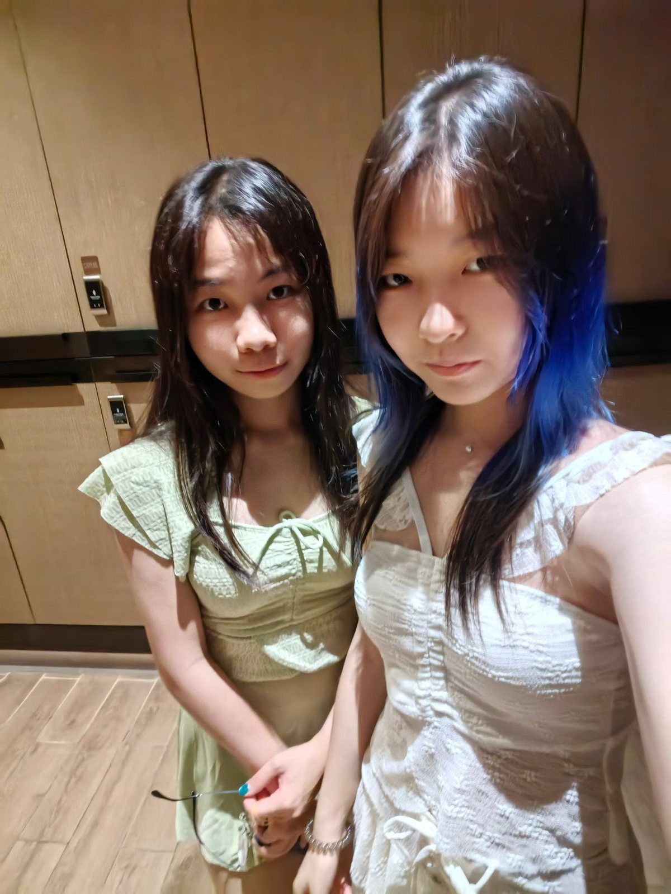
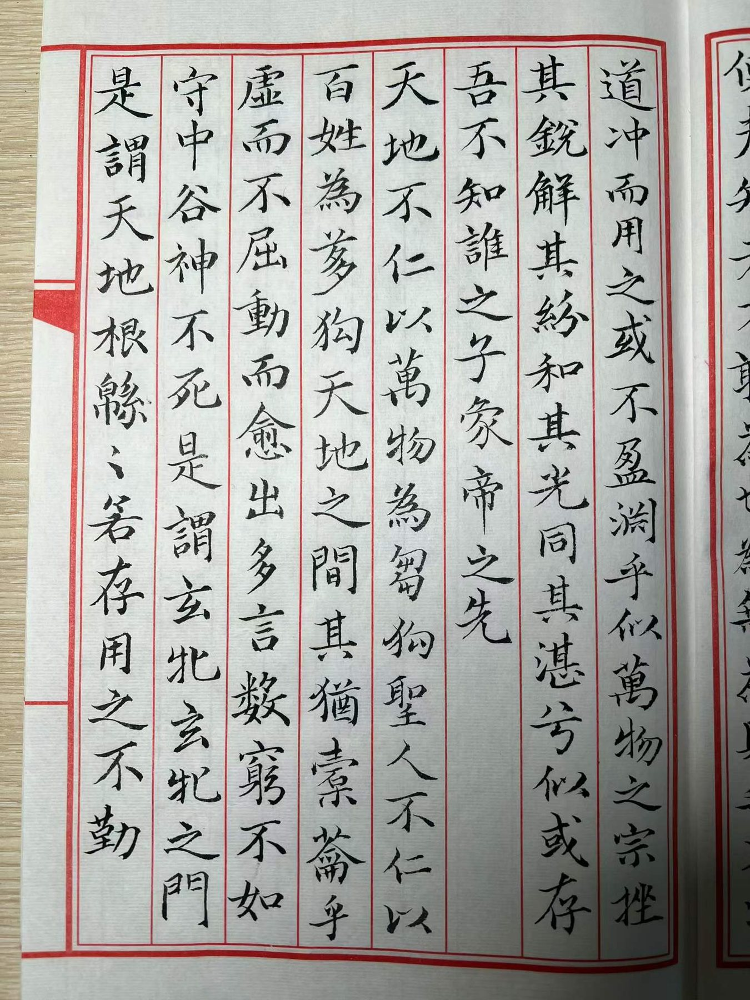
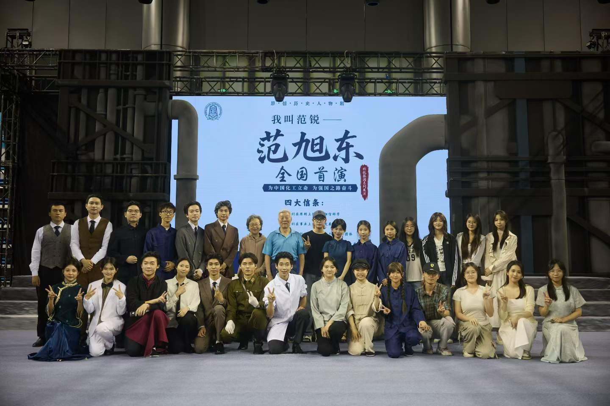

把世界， 写进作品里。
你好，我是 单小蔓。20岁，视觉创作者。 这里收藏我的作品、旅程，以及正在继续生长的生活。
五种表达，
同一种认真。
从19岁的年度档案里挑出的真实作品：画过的角色、写完的长卷、 做过的动画，以及在纸面与屏幕之间慢慢长出来的表达。
精选自 19 岁年度总结 · 持续更新作品之外，
也在认真生活。
作品是结果，生活才是来源。这里记录此刻的状态、沿途的观察， 以及那些还没有变成作品，但值得被留下的片段。
查看 19 岁年度档案 ↓“独自出发，
然后把世界走成了故事。”
一个人，也可以走很远
从第一场说走就走的旅行开始，去摩尔曼斯克看极光、去西伯利亚玩雪地摩托，也去仙本那潜水、在三亚冲浪。
让喜欢的事成为日常
画了100多张画，抄完《洛神赋》《道德经》《心经》《恨赋》《草堂十志》，也完成了六部建模动画。
把生活搬上舞台
做制作人、主演和幕后，参与《遇人不赎》《考试就剩15分钟》等作品与20余场活动；也在心理学应用大会上见到了彭凯平先生。



走过的、画下的，
写下的、做出来的。
十个独立板块，每个板块只展示一张封面。点击后再展开完整照片与动画， 让浏览保持安静，也保留打开一份记忆的仪式感。
创作不只是让画面变好看。
它应该让人停一下，看见平时忽略的东西。
我的创作游走在绘画、书法、设计与影像之间。喜欢从感受和故事出发， 用颜色、线条与结构建立画面，再把脑海里的想象变成能被看见的世界。
工作时，我保持好奇，也保持耐心。相信好的画面不需要解释太多—— 它会在第一眼打动你，又在细节里留下值得回味的东西。
绘画与书法
从色彩、肌理到笔墨节奏，在传统媒介中寻找真诚而独特的表达。
视觉设计与叙事
用图形、字体、版式与镜头组织信息，让视觉表达清晰、有层次、有记忆点。
建模动画与分镜
从空间、材质到动态节奏，用三维与镜头语言让故事真正动起来。
从一个画面，
到一段完整的叙事。
视觉表达
围绕绘画、书法与图形语言展开创作，让情绪、气质和想法拥有准确的视觉形态。
- 绘画创作
- 书法与字体
- 视觉实验
设计与叙事
把视觉、信息与故事组织在一起，形成有辨识度、能有效传达的设计表达。
- 视觉设计
- 版式与海报
- 分镜设计
动态与空间
从模型、材质到镜头调度，构建有真实质感与节奏的动画和视觉叙事。
- 3D 建模
- 动画制作
- 镜头预演
简单、透明，
把精力留给真正重要的事。
聊清楚
理解目标、用户和限制，找到最值得解决的问题。
找方向
用快速可视化的方式探索路线，尽早对齐审美与预期。
做完整
把核心体验做深，建立可复用、可持续扩展的设计系统。
交出去
交付可操作成果与清晰说明，确保它能在真实场景中工作。
有个想法？
我们一起把它做出来。
无论是一幅画、一次视觉合作、一段动画，还是一个还没想清楚的故事， 都欢迎来聊聊。通常我会在 1–2 个工作日内回复。